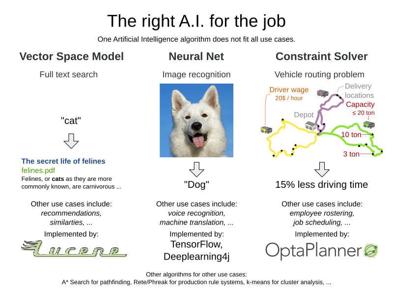

Does A.I. include constraint solvers?
The A.I. winter is over.
For a few years now, the interest in Artificial Intelligence technologies is growing again.
Not just from us, A.I. geeks. Business sees the potential to invest.
To acquire new funding, many research projects are rebranding themselves as A.I. technology.
Often justified. But not always.
Can Constraint Solvers use the A.I. tag too?
For a few years now, the interest in Artificial Intelligence technologies is growing again.
Not just from us, A.I. geeks. Business sees the potential to invest.
To acquire new funding, many research projects are rebranding themselves as A.I. technology.
Often justified. But not always.
Can Constraint Solvers use the A.I. tag too?
A little history: the fifth generation project
For almost two decades, A.I. was a dirty word.
To understand why, we need to go back to 1982,
when Japan decided to invest massively in the fifth generation computer,
an Artificial Intelligence platform which would leapfrog the existing computers of the time and break IBM’s monopoly.
In a reaction, other countries funded similar projects.
Suddenly research money fell out of the sky. The 80’s summer of A.I.
To understand why, we need to go back to 1982,
when Japan decided to invest massively in the fifth generation computer,
an Artificial Intelligence platform which would leapfrog the existing computers of the time and break IBM’s monopoly.
In a reaction, other countries funded similar projects.
Suddenly research money fell out of the sky. The 80’s summer of A.I.
It failed. Despite decadent funding for almost 10 years,
the fifth generation research had little practical use to show for.
Some of the research was ahead of its time:
lacking big data, smart phones and faster computers, it couldn’t work yet.
Other research was completely useless.
the fifth generation research had little practical use to show for.
Some of the research was ahead of its time:
lacking big data, smart phones and faster computers, it couldn’t work yet.
Other research was completely useless.
In the aftermath of that failure, in the 90’s and early 2000’s, the term A.I. was tainted.
A.I. didn’t work. Developers quickly stopped branding their technologies as such.
Constraint solvers strengthened their Operations Research affiliation.
Search engines acted as if they’re a simple dictionary lookup.
Rule engines focused on decision tables.
They all avoided mentioning their A.I. affiliation. Except for neural nets.
A.I. didn’t work. Developers quickly stopped branding their technologies as such.
Constraint solvers strengthened their Operations Research affiliation.
Search engines acted as if they’re a simple dictionary lookup.
Rule engines focused on decision tables.
They all avoided mentioning their A.I. affiliation. Except for neural nets.
Neural nets: one tech fits all?
The last few years, neural nets made Artificial Intelligence cool again.
A neural net mimics the neurons in our brain (not as much as you’d think).
It’s a black box that transforms input data into output data,
by pushing it through a number of neural layers of mostly sum and multiply arithmetic.
For decades, its accuracy was too low,
but that changed dramatically, with the recent rise of big data
and the discovery of better backpropagation methods.
The latter enables more layers. More layers equals deep learning.
A neural net mimics the neurons in our brain (not as much as you’d think).
It’s a black box that transforms input data into output data,
by pushing it through a number of neural layers of mostly sum and multiply arithmetic.
For decades, its accuracy was too low,
but that changed dramatically, with the recent rise of big data
and the discovery of better backpropagation methods.
The latter enables more layers. More layers equals deep learning.
Nowadays, neural nets can recognize faces and voices.
And in a hybrid combination with other A.I. technologies (such as minimax),
they can even beat the world’s champion of Go.
Sounds like magic. But these are all pattern recognition problems.
They can’t handle other problems.
Neural nets can’t find the fastest route from La Louvre to the Colosseum.
They can’t build the ultimate American roadtrip.
And in a hybrid combination with other A.I. technologies (such as minimax),
they can even beat the world’s champion of Go.
Sounds like magic. But these are all pattern recognition problems.
They can’t handle other problems.
Neural nets can’t find the fastest route from La Louvre to the Colosseum.
They can’t build the ultimate American roadtrip.
The right A.I. for the job
Neural nets aren’t an AGI (artificial general intelligence).
Neither are constraint solvers or production rule systems, for that matter.
Each one can only solve one subset of A.I. problems.
That’s probably a good thing: none can become Skynet and pose a treat to humanity.
Neither are constraint solvers or production rule systems, for that matter.
Each one can only solve one subset of A.I. problems.
That’s probably a good thing: none can become Skynet and pose a treat to humanity.
So to solve business problems with intelligent software,
use the algorithm that fits the use case:
use the algorithm that fits the use case:

This hasn’t stopped academics from trying.
There’s plenty of research with neural nets to solve vehicle routing
or employee rostering,
it’s just consistency inferior to constraint solving algorithms such as Tabu Search and Simulated Annealing.
Why settle for a 1% reduction in driving time when you can have 15%?
There’s plenty of research with neural nets to solve vehicle routing
or employee rostering,
it’s just consistency inferior to constraint solving algorithms such as Tabu Search and Simulated Annealing.
Why settle for a 1% reduction in driving time when you can have 15%?
Visa versa, constraints solvers can’t even solve
the infamous image recognition of a hot dog.
the infamous image recognition of a hot dog.
Do all algorithms produce intelligence?
Multiplying
Similarly, sorting algorithms aren’t A.I either. Why is that?
1234 by 5678 isn’t easy, yet we don’t consider this artificial intelligence.Similarly, sorting algorithms aren’t A.I either. Why is that?
Maybe it’s because those problems don’t have an error margin.
A.I. problems do:
Given an image of a husky dog, some people recognize a wolf instead.
Given a TSP problem to draw the shortest tour,
people submit unique results of varying quality.
A.I. problems do:
Given an image of a husky dog, some people recognize a wolf instead.
Given a TSP problem to draw the shortest tour,
people submit unique results of varying quality.
Maybe it’s because the calculation and sorting algorithms are understandable.
There is no black box.
It’s relatively easy to see how the computer transforms the input, instruction by instruction, into the output.
There is no black box.
It’s relatively easy to see how the computer transforms the input, instruction by instruction, into the output.
What about constraint solvers?
Historically, constraint solvers (such as OptaPlanner) are definitely part of the field of Operations Research,
but that doesn’t exclude them from other fields.
but that doesn’t exclude them from other fields.
I’d argue that constraints solvers also fall into the field of Artificial Intelligence.
Not just because papers and books say so.
Mainly because constraint solving use cases are inherently complex problems to master.
There’s great variation in solution quality, both by human planners and specialized algorithms alike.
Given a sufficiently large dataset, the optimal solution is impossible to find.
Furthermore, researchers still discover new algorithms,
even though other algorithms are almost 40 years old.
Not just because papers and books say so.
Mainly because constraint solving use cases are inherently complex problems to master.
There’s great variation in solution quality, both by human planners and specialized algorithms alike.
Given a sufficiently large dataset, the optimal solution is impossible to find.
Furthermore, researchers still discover new algorithms,
even though other algorithms are almost 40 years old.
What do you think? Are constraint solvers part of the field of Artificial Intelligence?
Author

This post was original published on here.